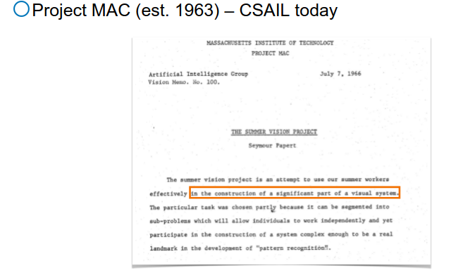
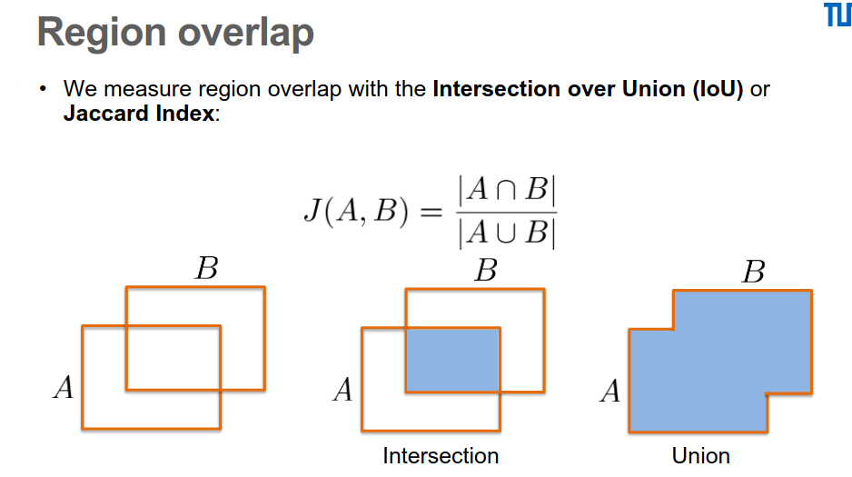
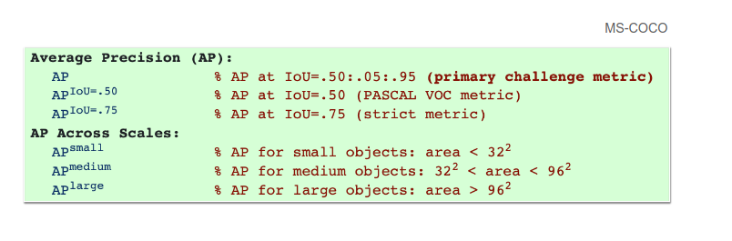
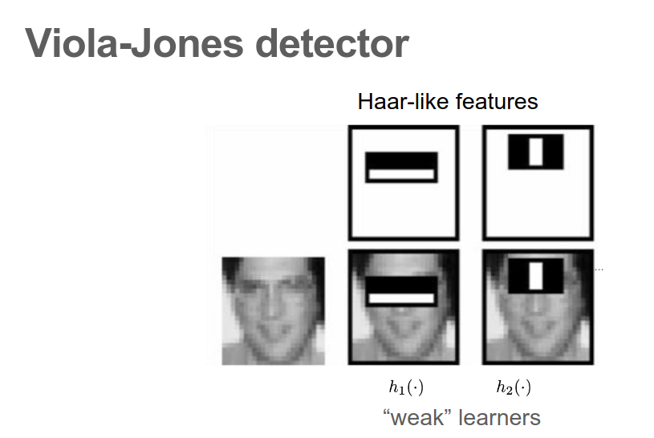
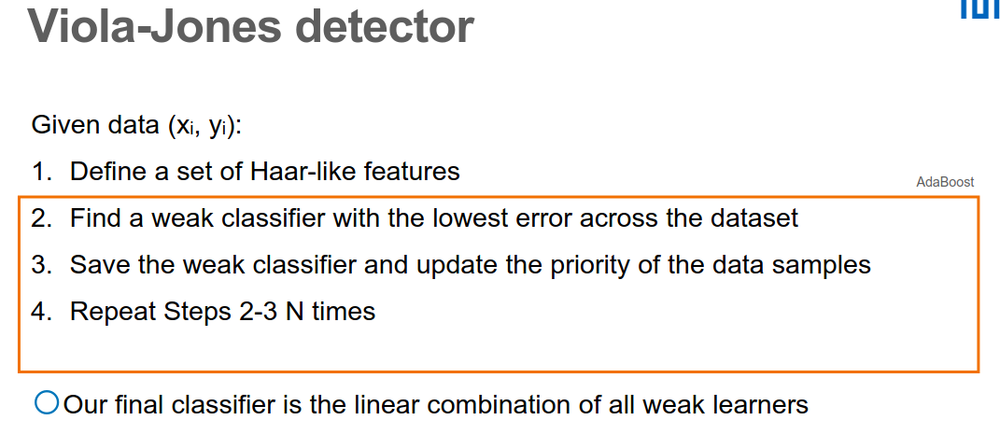

Computer Vision III — Notes 1: Object Detection
本文笔记中英混杂，纯英文阅读可使用浏览器自带的翻译功能。 These notes mix Chinese and English — your browser's built-in translation works well if you prefer pure English.
These notes deviate from the order of the lecture slides and start from the motivation instead. We first look at how detection is evaluated, then follow the classical single-stage pipeline — from template matching to feature-based detectors such as the Viola–Jones detector, HOG features and non-maximum suppression (NMS) — and its first deep-learning incarnation, OverFeat. We then study object proposals (selective search, edge boxes) and the two-stage R-CNN family: R-CNN, SPPNet and Fast R-CNN; to make proposal generation learnable, the region proposal network (RPN) takes us to Faster R-CNN. Finally we return to modern one-stage methods — YOLO, SSD, focal loss and RetinaNet — and close with keypoint-based detection (CornerNet, CenterNet), sequential detection, and spatial transformer networks.
1. Motivation
Computer Vision的目标是mimic the human visual system, 发展从mit 1963年project mac到现在是ai的中心。

本课专注rgb image和rgb video的不同颗粒度下的semantic understanding,属于highlevel computer vision. 在object detection任务中我们用bounding box这种coarse的description来localize object.
2. Evaluation: how do we measure a detector?
2.1 Region overlap: IoU
首先我们为了定义两个框之间的关系(Region overlap)引入了Intersection over Union (IoU) or Jaccard Index, 下图IoU中我们看到, IoU是两者交集的面积除以两者并集的面积

2.2 TP / FP / FN, precision and recall
在detection的evaluation我们有以下三种情况：
- TP = True positive表示有物体且正确框住
- FP = False positive表示没有物体但错框
- FN = False negative表示有物体但没有框
Precision = TP / (TP + FP) 评估模型多precise 其中TP + FP 是predicted boxes的数量
Recall = TP / (TP + FN) 评估模型召回有多好 其中TP + FN 是ground truth boxes的数量
2.3 What counts as a positive match?
那么当我们bounding box框住一片区域，什么是true positive 什么是 false positive? 我们用IoU作为threshold来评判模型预测的bbox和GT的bbox，例如在MS-COCO和PASCAL VOC中当IoU大于0.5即为positive match. 同时每一个prediction和gt box是一一对应的，如果有多个那么是存在错误
2.4 Average precision (AP)
结合precision和recall我们得到了average precision(AP)的metric, 横轴用recall竖轴用precision, 在1x1的区域内，面积越大越好

2.5 Computing average precision
- Sort the predicted boxes by confidence score.
- For each prediction, find the associated ground truth. Note: the ground truth must not be assigned yet, and the prediction must pass the IoU threshold.
- Compute cumulative TP and FP. Example with three predictions: TP = [1, 0, 1], FP = [0, 1, 0] → cTP = [1, 1, 2], cFP = [0, 1, 1].
- Compute precision and recall (#GT = 3, so TP + FN = 3): precision = cTP divided by the prediction index → [1/1, 1/2, 2/3]; recall = cTP divided by #GT → [1/3, 1/3, 2/3].
- Plot the precision–recall curve; AP is the area beneath it (numerical integration).
2.6 AP flavours and mAP

- AP may be averaged over multiple IoU thresholds.
- mAP is the average over object categories.
3. Classical single-stage detection
3.1 Template matching
最简单的想法是定义一个metric，用一个物体图像作为template，通过sliding window扫过整张图片， measure每个位置和template的similarity，其中high correlation的region认为是object：

我们定义matching函数为 L(x₀, y₀) = d(I₍ₓ₀,ᵧ₀₎, T)，其中d是distance（或similarity）
metric，I₍ₓ₀,ᵧ₀₎ 是以 (x₀, y₀) 为位置的image region，T是template。d可以用：
-
Sum of squared distances (SSD) / mean squared error (MSE)：
d(I, T) = (1/n) · Σₓ,ᵧ (I(x,y) − T(x,y))²但是MSE对intensity变化非常敏感：光照变亮、对比度改变都会让distance变大， 即使物体本身没有变。
-
于是我们做normalization，得到Normalised cross-correlation (NCC)：
d(I, T) = (1/n) · Σₓ,ᵧ I(x,y)·T(x,y) / (σ_I σ_T)其中σ_I和σ_T分别是image region和template的standard deviation。 除以标准差后，NCC对乘性的contrast变化（gain）invariant。
-
但是NCC依然对加性的brightness偏移（offset）敏感，我们用 Zero-normalised cross-correlation (ZNCC) 代替：
d(I, T) = (1/n) · Σₓ,ᵧ (I(x,y) − μ_I)(T(x,y) − μ_T) / (σ_I σ_T)其中μ_I、μ_T分别是image region和template的mean。先减均值再除标准差， ZNCC对affine intensity change（gain + offset）都invariant。
Quiz: Can I just swap SSD with NCC in my code?
No. SSD是distance，要最小化；NCC是similarity，要最大化。直接替换会把最差的 位置当成最好的——需要把argmin改成argmax（或改用 1 − NCC 作为distance）。
但是template matching有根本性的问题：
- (Self-)occlusions（例如pose变化造成的遮挡），template对不上
- Changes in appearance：template是固定的，物体外观一变就失效
- 目标的position、scale、aspect ratio全都unknown，只能对所有组合做 brute-force search，非常inefficient
3.2 Feature-based detection: Viola–Jones
新的one-stage detectors不再用template做sliding window，而是先对RGB pixel values做 feature extraction，再在feature上同时做classification和localization：

idea是learn feature-based classifiers invariant to natural object changes。 但随之而来的问题是features are not always linearly separable，单个简单分类器不够用， 所以我们learn multiple weak learners，组合成一个strong classifier（boosting）。
Viola–Jones detector的流程：
-
先定义大量的Haar-like features：如下图中竖条、横条等黑白矩形组合， feature value = 白色区域像素总和 − 黑色区域像素总和。每个Haar feature配一个 threshold就构成一个weak learner
hᵢ(·)。借助integral image（积分图）， 任意矩形的像素和只需4次查表，所以这些feature可以在常数时间内算出。
-
然后按下图的步骤用AdaBoost训练。AdaBoost的思想：每一轮在当前样本权重下， 从所有候选weak learner中找到error最低的那个并保存；然后提高被它分错的样本的 权重（update the priority of the data samples），让下一轮的weak learner专注于 难例；重复N轮。

-
最终的strong classifier是所有weak learners的linear combination（每个learner 的权重和它的准确率相关）。
注意：原始论文里的weak classifier不是SVM，而是decision stump——对单个 Haar feature取threshold的一层决策树，简单到单独用几乎没用，但组合起来很强。 实际检测时VJ还把strong classifiers串成attentional cascade：前几级用极少的 feature快速拒绝绝大多数negative windows，只有全部通过的window才算检测到， 这是它能real-time的关键。
Viola–Jones的问题：
- Haar features是hand-crafted的，表达能力有限，基本只对rigid、frontal的物体 （典型：正脸）work
- 对pose / viewpoint变化、形变、遮挡不robust——侧脸就得另外训练一个detector
- 每个类别都要单独训练，无法scale到general的多类别object detection
3.3 HOG features and sliding windows
(…)
3.4 Non-maximum suppression (NMS)
(…)
4. First deep one-stage detector: OverFeat
(…)
5. Object proposals
5.1 Selective search
(…)
5.2 Edge boxes
(…)
6. The two-stage R-CNN family
6.1 R-CNN
(…)
6.2 SPPNet
(…)
6.3 Fast R-CNN
(…)
6.4 RPN and Faster R-CNN
(…)
7. Modern one-stage detectors
7.1 YOLO
(…)
7.2 SSD
(…)
7.3 Focal loss and RetinaNet
(…)
8. Beyond boxes
8.1 Keypoint-based detection: CornerNet, CenterNet
(…)
8.2 Sequential detection
(…)
9. Spatial transformers
(…)